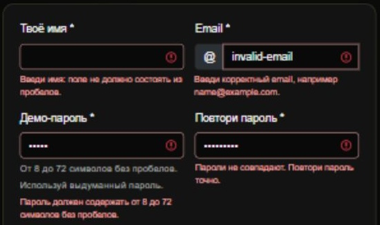
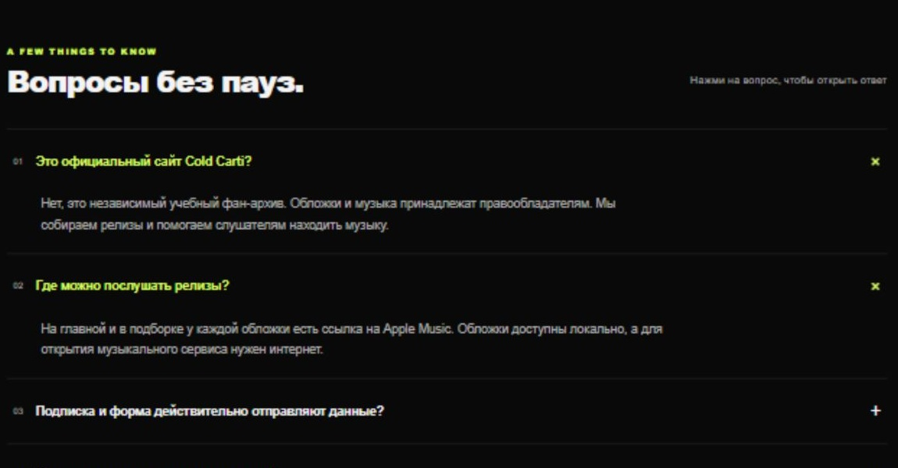

Assignment 4: Introduction to JavaScript
Team: Music Band | Group: SE-2501
Members: Kanatov Sabyrzhan and Zhaxylyk Alikhan
Objective: Add five interactive JavaScript features to the existing Music Band website.
Task 1. Form validation
- Add name, email, password, confirmation and message fields to the contact form.
- Check empty fields, email format, password length and matching passwords with JavaScript.
- Show an error beside each incorrect field. Show a success message when everything is valid.

Task 2. FAQ accordion
- Add questions and answers to the About page.
- Hide the answers when the page opens.
- Use a click event to show or hide an answer with a short transition.

Task 3. Subscription popup
- Add a hidden subscription form with name and email fields.
- Open it when the Subscribe button is clicked.
- Close it with the close button, an outside click or Escape.
Task 4. Background color
- Add a button and a list of four background colors.
- Use JavaScript to select the next color after each click.
- Update the background and the color name shown beside the button.
Task 5. Current date and time
- Add a date and time block to the page.
- Get the current date and time with JavaScript's Date object.
- Format the result and refresh it every second with setInterval.
Checks
Checked form errors, valid input, FAQ toggling and popup controls in Chromium.
Checked the page layout at widths from 320 to 1440 pixels.
Reflection
This work shows how JavaScript handles clicks, checks input and updates a page. The forms are demos and do not send or save data.